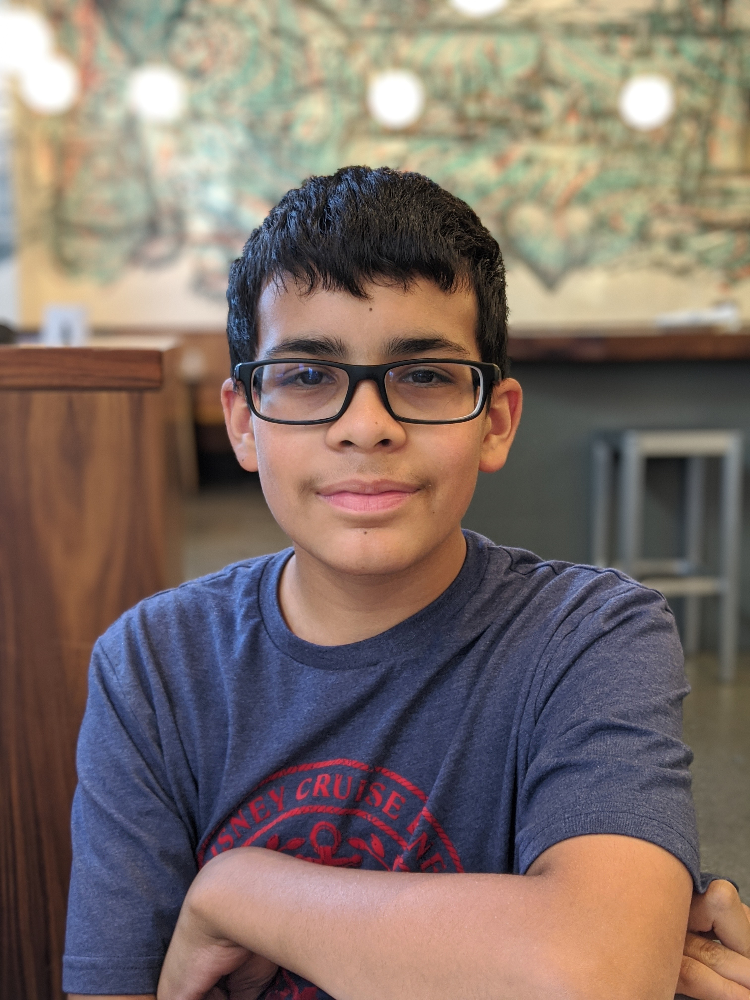

 Did you know that in today’s world, engineering professions associated with subjects such as automated farming and environmental sustainability are on the rise? While most people may consider those jobs to be unstable or infeasable, in reality these types of jobs will become some of the most stable jobs in today’s world as climate change progresses and a need for more efficient agriculture becomes more and more important. This is one of the many reasons why my career goal is to pursue environmental engineering, more specifically agricultural engineering to design and build more efficient ways of growing food. I plan to pursue agricultural engineering as I finish high school and enter college, and find and apply to a college with plenty of majors in agricultural engineering, and then look for and apply for a job as an agricultural engineer. The reason why I would like to follow the path to agricultural engineering is because I have always enjoyed engineering, designing, and growing vegetables, and I wanted to find a career that employs all of them, which happens to be agricultural engineering.
Despite all my enthusiasm for this subject, I am still absolutely sure that entering and excelling in this field will not be easy. I know that I will need a lot of specific skills and experiences for this type of career, but thankfully I have been making lots of progress in gaining more experience with it. In Freshman year, I joined the Green Earth club, an environmental club that focused on gardening, and I got my first experiences with engineering through robotics and my first CS class (Computer Science Principles). In Sophomore year, I got more involved in engineering through joining a robotics team, joining the Dublin Engineering and Desingn Academy at my school and taking the class Principles of Engineering. Between Sophomore and Junior year, I took COSMOS at UC Davis on Future Foods over the summer to learn more about growing plants and fish with automation. In Junior year, I took the last two environmental classes my school had to offer in the form of Environmental sustainability and AP Environmental Science, and with the brunt of the pandemic out of the way, the Green Earth club could starte making some more progress on creating a school garden. Finally, in Senior year, I joined the Environmental technology club as well, which has plans to make a green space for the school to both grow plants for food or the culinary academy but also provide grounds for environmental research or projects form the environmental classes.
Throughout the years of trying out new things and seeing what works, I got to learn a lot about myself as well. The first time I was ever introduced to the blending of gardening and engineering was in 8th grade, when I took a class called Industrial Design in which we made a school garden, which helped me find my passion for Agricultural Engineering. When I entered the robotics club for the first time, I started discovering how I could come up with interesting designs through tinkering with parts. Over the years of engineering, art, and garden experiences I've had, I figured out that I can be very good at coming up with and designing new ideas that can be used for projects. Along with that, I also have a fair number of achievements from high school and even a couple from middle school. For one, I have mostly upheld high grades since middle school in all of my classes. From 6th grade to 9th, I finished every quarter and semester with all As and a couple high Bs, which did take a bit of a dip in Sophomore year during the pandemic, but came back strong in Junior and Senior year. As mentioned before, between Sophomore and Junior year I was admitted to COSMOS at UC Davis, and got to learn a lot about future foods and ways of sustainably growing them in agriculture. In Junior year, I helped the Green Earth Club set up a sizeable school garden which had a full harvest in the winter, and is still active to this day. In Senior year, I'm helping the Environmental Technology club set up the green space through helping with planning, helping build the fences and gates for the area, and helping with constructing the first component of the green space, an automated greenhouse that should be completed by the end of the year. I also currently qualify for the Seal of Biliteracy and have earned the Academic Block D award from my school.
School email: silvera4202@mydusd.org
Home email: amso5382@gmail.com